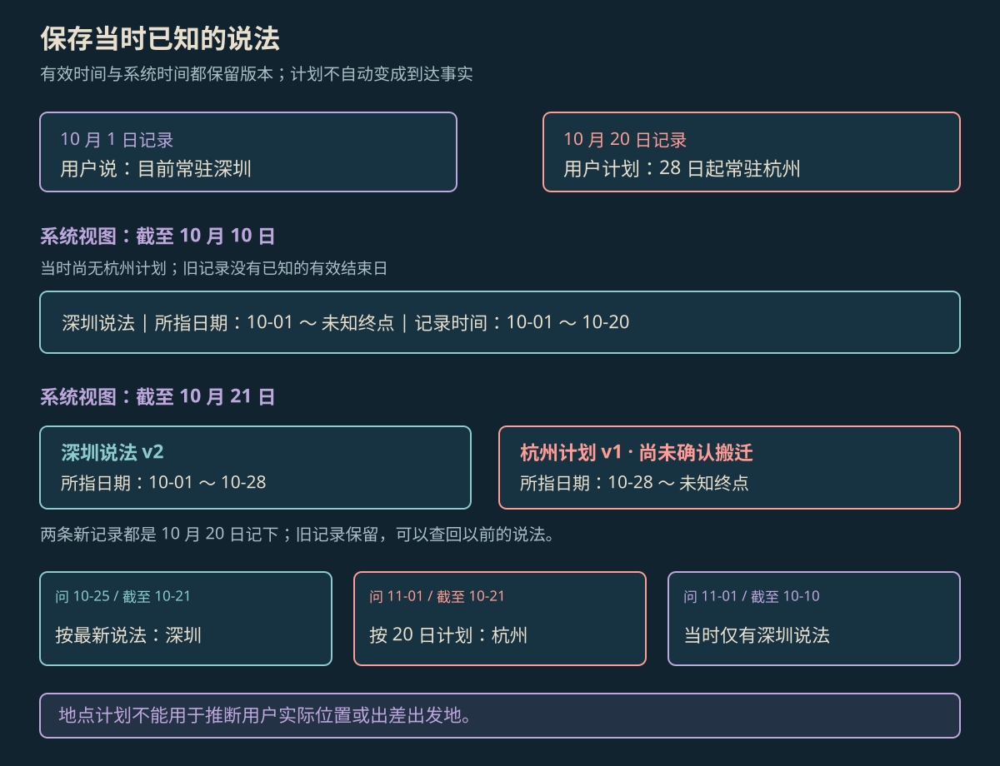

AGENT MEMORY
Agent 记忆原理
Agent 记忆通过外部存储与检索保存跨步骤、跨会话的信息。写入、更新、读取和删除共同决定模型下一次得到哪些历史知识。
本页目录
记忆如何参与模型调用#
Agent 记忆是对过去交互、观察和任务状态的保存与再利用机制。模型当前上下文只容纳本轮可见的信息；长期记忆将信息保存在上下文之外，需要时再检索进入输入。外部记忆的新增和修改通常不改变模型参数。MemGPT 通过不同存储层之间的信息移动管理有限上下文；Generative Agents 则保存经历、形成较高层次的反思，并按当前任务检索。[1][2]
工作状态可以记录当前计划和未完成项；事件记忆保存发生过的交互；事实记录保存带来源的用户信息；经验记录保存特定条件下的做法。它们的存储格式与读取策略可以不同，不能把所有历史消息不加区分地当作已确认事实。
写入、更新与读取#
- 写入：从观察中提取值得保留的信息，附上主体、原始来源、时间与类型。用户确认、未来计划和模型推断应分别保存。
- 更新：新说法与旧记录冲突时，判断它是纠错、状态变化还是尚未发生的计划，并保留必要的修订关系。
- 读取：依据当前任务检索候选，过滤主体、访问范围、时间和状态，再把合适记录连同来源放入上下文。
- 回答：模型根据选中的记录生成结果；没有记录或资料冲突未解时，保留未知状态。
向量索引解决语义相近内容的定位，结构化字段解决时间、身份和版本等条件。检索相似度不会自动判断哪条记录已经过期，也不会自动区分计划与实际事件。
有效时间与系统时间#
时间更新需要回答两个不同问题：一条说法适用于哪段日期，以及系统在某个历史时刻已经知道哪一版说法。前者称有效时间（valid time），后者称系统时间（system time）。下面使用双时间版本记录作为工程示例；它不是所有 Agent 记忆论文规定的统一字段。
教学对话中，用户 10 月 1 日说“目前常驻深圳”，20 日补充“计划 28 日开始常驻杭州”。更新时关闭深圳旧版本的系统区间，再新增按计划修订的深圳区间和杭州计划。旧版仍保留当时“尚不知道结束日期”的知识。
| 记录版本 | 有效区间 [from,to) | 系统区间 [from,to) | 说法类型 |
|---|---|---|---|
| 深圳 v1 | 10-01 ～ 未知终点 | 10-01 ～ 10-20 | 用户当时的常驻说法 |
| 深圳 v2 | 10-01 ～ 10-28 | 10-20 ～ 当前 | 按新计划修订的区间 |
| 杭州 v1 | 10-28 ～ 未知终点 | 10-20 ～ 当前 | 计划，尚未确认发生 |

放大查看 ↗深圳 v2 的边界来自 20 日的新计划，因此来源需要关联两次消息。杭州记录始终是计划，不能由有效日期直接推断实际搬迁或出差出发地。
双时间查询示例#
下面是单用户的可运行教学 fixture。查询同时匹配有效时间和系统时间，返回的是带类型的说法，回答层继续保留“计划”标签。日期统一使用 ISO 日历格式；区间右端不包含在内。
def row(value, kind, vf, vt, sf, st):
return dict(value=value, kind=kind, valid_from=vf, valid_to=vt,
system_from=sf, system_to=st)
facts = [
row("深圳", "reported", "2026-10-01", None,
"2026-10-01", "2026-10-20"),
row("深圳", "reported", "2026-10-01", "2026-10-28",
"2026-10-20", None),
row("杭州", "planned", "2026-10-28", None,
"2026-10-20", None),
]
def lookup(valid_at, known_at):
return [f for f in facts
if f["valid_from"] <= valid_at < (f["valid_to"] or "9999-12-31")
and f["system_from"] <= known_at < (f["system_to"] or "9999-12-31")]
assert lookup("2026-10-25", "2026-10-21")[0]["value"] == "深圳"
assert lookup("2026-11-01", "2026-10-10")[0]["value"] == "深圳"
future = lookup("2026-11-01", "2026-10-21")[0]
assert (future["value"], future["kind"]) == ("杭州", "planned")第二个断言重建的是“截至 10 日持有的说法”，不证明用户 11 月 1 日实际身在深圳。第三个断言得到杭州计划，答案应带上来源日期及“尚未收到实际搬迁确认”。后来若用户确认已搬迁，再新增确认记录；到达日期也不能由系统从计划中自动推断。
对话记忆与文档检索的区别#
对话记忆与文档 RAG 可以共用向量检索器，但写入责任不同。文档库通常来自外部资料的索引；对话记忆还需要判断某句话是否值得长期保存、谁提出了它、后续能否修订，以及用户纠错如何传播到派生记录。
查询“我在哪工作”可能同时命中深圳与杭州，旧句子的相似度甚至更高。先根据所问日期与已知时刻筛选，再评价相关性，才能避免让语义相似度替代时间语义。答案还要保留“说法”“计划”或“已确认事件”的类型。
长期记忆能力的评测#
LongMemEval 将长期交互记忆评测拆成信息提取、多会话推理、时间推理、知识更新和拒答五类能力。只检查模型还能否复述一句旧信息，无法覆盖更新和历史查询。[3]
这组对话应同时验证：25 日按最新说法为深圳，11 月只有杭州计划，10 日尚未知计划，从未提供的家庭住址返回资料不足。除了答案，还需检查它使用的记录是否属于允许的时间范围。
删除与派生记录#
用户要求删除地点记忆时，需要沿来源关联检查事实主表、摘要、嵌入索引和缓存。删除后再次查询杭州计划及其同义表达，确认这些派生副本不会把已删除内容重新送回上下文。原始审计记录的保留范围由产品数据规则确定。
参考资料
论文、官方文档与案例依据。
- [1]MemGPT: Towards LLMs as Operating Systems ↗
Packer 等；有限上下文与分层记忆管理。
- [2]Generative Agents: Interactive Simulacra of Human Behavior ↗
Park 等；观察、记忆、反思与行为规划。
- [3]LongMemEval: Benchmarking Chat Assistants on Long-Term Interactive Memory ↗
Wu 等；ICLR 2025，长期交互记忆能力评测。